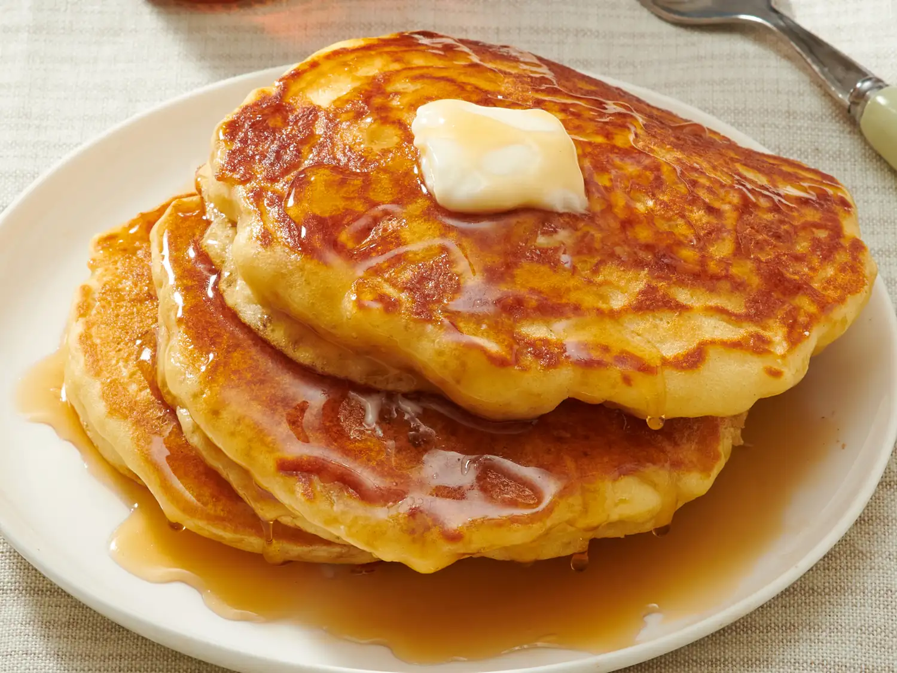

Description: "These buttermilk pancakes are passed down from my grandmother, who was fully Scandinavian. They are light and fluffy, and great with berry syrups. I have made these for years as a special treat, and I hope you enjoy them as much as my family has."
Note: Descriptions, Recipes, and Ingredients are all pulled from the Allrecipes website